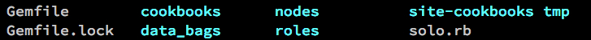

<!doctype html>
<html lang="en">

<head>
  <meta charset="utf-8">

  <title>Chef-solo Introduction</title>

  <meta name="description" content="A quickstart on chef-solo">
  <meta name="author" content="Lincoln Lee">

  <meta name="apple-mobile-web-app-capable" content="yes" />
  <meta name="apple-mobile-web-app-status-bar-style" content="black-translucent" />

  <meta name="viewport" content="width=device-width, initial-scale=1.0, maximum-scale=1.0, user-scalable=no">

  <link rel="stylesheet" href="css/reveal.min.css">
  <link rel="stylesheet" href="css/theme/moon.css" id="theme">

  <!-- For syntax highlighting -->
  <link rel="stylesheet" href="lib/css/zenburn.css">

  <!-- If the query includes 'print-pdf', use the PDF print sheet -->
  <script>
  document.write( '<link rel="stylesheet" href="css/print/' + ( window.location.search.match( /print-pdf/gi ) ? 'pdf' : 'paper' ) + '.css" type="text/css" media="print">' );
  </script>

    <!--[if lt IE 9]>
    <script src="lib/js/html5shiv.js"></script>
    <![endif]-->
  </head>

  <body>

    <div class="reveal">

      <!-- Any section element inside of this container is displayed as a slide -->
      <div class="slides">
        <section data-markdown>
          <script type="text/template">
            ## Chef Solo Introduction

            Lincoln Lee

            [@linc01n](http://twitter.com/linc01n)

            [http://chef-solo-intro.lincoln.hk](http://chef-solo-intro.lincoln.hk)

            10 July 2013
          </script>
        </section>

        <section data-markdown>
          <script type="text/template">
            ## What is Chef?
              + <p class="fragment">Cloud Infrastructure Automation Framework</p>
              + <p class="fragment">Infrastructure as code</div>
              + <p class="fragment">Write your infrastructure in Ruby</p>

          </script>
        </section>

        <section data-markdown>
          <script type="text/template">
            ## Why use Chef?
              + <p class="fragment">Versioning on infrastructure</p>
              + <p class="fragment">Replicate server on different providers (AWS, Linode, VirtualBox)</p>
              + <p class="fragment">so on...</p>
          </script>
        </section>

        <section data-markdown>
          <script type="text/template">
            ## What is Chef-solo
              + <p class="fragment">Chef use a server/client model</p>
              + <p class="fragment">Chef-solo remove the server part</p>
          </script>
        </section>

        <section data-markdown>
          <script type="text/template">
            ## Dependencies on local machine
            ```ruby
            # A chef-demo Gemfile
            source "https://rubygems.org"

            gem "knife-solo"
            gem "librarian"
            ```

          </script>
        </section>

        <section data-markdown>
          <script type="text/template">
            ## Initialize a chef directory
            ```
            $ knife solo init .
            ```
            </img>
          </script>
        </section>

        <section data-markdown>
          <script type="text/template">
            ## Initialize librarian
            ```
            $ librarian-chef init
            ```
            <p class="fragment">It will create a Cheffile.</p>
          </script>
        </section>

        <section data-markdown>
          <script type="text/template">
            ## Inside Cheffile

            ```ruby
            #!/usr/bin/env ruby
            #^syntax detection

            site 'http://community.opscode.com/api/v1'

            # cookbook 'chef-client'

            # cookbook 'apache2', '>= 1.0.0'

            # cookbook 'rvm',
            #   :git => 'https://github.com/fnichol/chef-rvm'

            # cookbook 'postgresql',
            #   :git => 'https://github.com/findsyou/cookbooks',
            #   :ref => 'postgresql-improvements'

            ```
          </script>
        </section>

        <section data-markdown>
          <script type="text/template">
            ## Prepare the remote machine
            ```bash
            $ knife solo prepare root@192.168.5.164
            ```
            <p class="fragment">It will do 2 things:</p>

            + <p class="fragment">SSH to the remote server and install chef</p>
            + <p class="fragment">Create a json file in nodes dir</p>
          </script>
        </section>

        <section data-markdown>
          <script type="text/template">
            ## Add cookbook in Cheffile

            ```ruby
            #!/usr/bin/env ruby
            #^syntax detection

            site 'http://community.opscode.com/api/v1'

            cookbook "nginx"
            ```
          </script>
        </section>

        <section data-markdown>
          <script type="text/template">
            ## Demo for installing Nginx
            Add <a href="https://github.com/opscode-cookbooks/nginx" target="_blank">Nginx</a> to runlist in nodes json

            ###### In nodes/192.168.5.164.json:

            ```json
            {
              "run_list":["recipe[nginx::source]"]
            }
            ```
          </script>
        </section>

        <section data-markdown>
          <script type="text/template">
            ## Time to cook!

            ```bash
            $ knife solo cook root@192.168.5.164
            ```
          </script>
        </section>

        <section data-background-size="100%" data-background="http://chef-solo-intro.lincoln.hk/img/cook1.png">

        </section>

        <section data-background-size="70%" data-background="http://chef-solo-intro.lincoln.hk/img/cook2.png">

        </section>

      </div>

    </div>

    <script src="lib/js/head.min.js"></script>
    <script src="js/reveal.min.js"></script>

    <script>

      // Full list of configuration options available here:
      // https://github.com/hakimel/reveal.js#configuration
      Reveal.initialize({
        controls: true,
        progress: true,
        history: true,
        center: true,
        rollingLinks: true,

        theme: Reveal.getQueryHash().theme, // available themes are in /css/theme
        transition: Reveal.getQueryHash().transition || 'zoom', // default/cube/page/concave/zoom/linear/fade/none

        // Optional libraries used to extend on reveal.js
        dependencies: [
        { src: 'lib/js/classList.js', condition: function() { return !document.body.classList; } },
        { src: 'plugin/markdown/marked.js', condition: function() { return !!document.querySelector( '[data-markdown]' ); } },
        { src: 'plugin/markdown/markdown.js', condition: function() { return !!document.querySelector( '[data-markdown]' ); } },
        { src: 'plugin/highlight/highlight.js', async: true, callback: function() { hljs.initHighlightingOnLoad(); } },
        { src: 'plugin/zoom-js/zoom.js', async: true, condition: function() { return !!document.body.classList; } },
        { src: 'plugin/notes/notes.js', async: true, condition: function() { return !!document.body.classList; } }
          // { src: 'plugin/search/search.js', async: true, condition: function() { return !!document.body.classList; } }
          // { src: 'plugin/remotes/remotes.js', async: true, condition: function() { return !!document.body.classList; } }
          ]
        });

</script>

</body>
</html>
